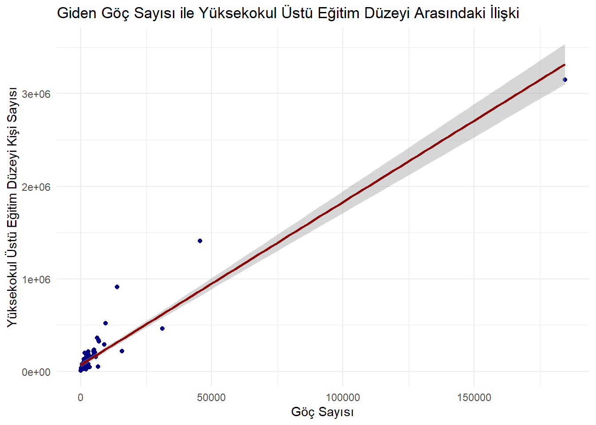

# A tibble: 6 × 3
il yuksekokul giden
<chr> <dbl> <dbl>
1 Adana 340213 6800
2 Adıyaman 78247 1067
3 Afyon 91692 2626
4 Ağrı 40262 1052
5 Amasya 52817 814
6 Ankara 1409779 45552
3. Analiz
Türkiye’deki mevcut durum tespit edilmiştir.
Zaman serisi analizi ile kaçak göçmen sayısının tahmini yapılmıştır.
Kümeleme ile göç oranına göre iller gruplandırılmıştır.
Regresyon analizi ile göç hareketliliği ile GSYH ve eğitim düzeyi arasındaki ilişki belirlenmiştir.
3.1. Veri Analizi
I) Cinsiyet ve Yaş Aralığı Bazında Göç Hareketliliği:
Cinsiyete göre hangi yaş aralığında daha yoğun göç hareketliliğinin olduğu tespit edilmiştir.
Kodu Görmek İçin Tıklayınız.
library(ggplot2)library(readxl)data <-read_xls("C:/Users/irem.baykara/Documents/GitHub/emu660-spring2024-irembaykara/yas.xls")cubuk_grafik <-ggplot(data, aes(x = yas)) +geom_bar(aes(y = net_erkek), fill ="steelblue", stat ="identity", position ="dodge") +labs(title ="Erkeklerde Yaş Aralığı Bazında Net Göç Sayısı", x ="Yaş Aralığı", y ="Göç Sayısı") +theme_minimal() +theme(axis.text.x =element_text(angle =45, hjust =1))print(cubuk_grafik)
Kodu Görmek İçin Tıklayınız.
library(ggplot2)library(readxl)data <-read_xls("C:/Users/irem.baykara/Documents/GitHub/emu660-spring2024-irembaykara/yas.xls")cubuk_grafik <-ggplot(data, aes(x = yas)) +geom_bar(aes(y = net_kadin), fill ="pink", stat ="identity", position ="dodge") +labs(title ="Kadınlarda Yaş Aralığı Bazında Net Göç Sayısı", x ="Yaş Aralığı", y ="Göç Sayısı") +theme_minimal() +theme(axis.text.x =element_text(angle =45, hjust =1))print(cubuk_grafik)
II) Yurt Dışına En Çok Göç Veren Şehirler:
Yurtdışına en çok göç veren ve yurtdışından en çok göç alan şehirler belirlenmiştir. Bu şehirlerin nüfusuna oranla net göç oranı ortaya konmuştur.
Kodu Görmek İçin Tıklayınız.
library(ggplot2)library(readxl)data <-read_xls("C:/Users/irem.baykara/Documents/GitHub/emu660-spring2024-irembaykara/il.xls")# Göç veren şehirleri belirlemetop_10_veren <- data[order(-data$giden),][1:10,]ggplot(top_10_veren, aes(x =reorder(iller, -giden), y = giden)) +geom_bar(stat ="identity", fill ="skyblue") +coord_flip() +labs(title ="En Çok Göç Veren İlk 10 Şehir", x ="Şehirler", y ="Gelen Kişi Sayısı") +theme_light()
III)Yurt Dışından En Çok Göç Alan Şehirler:
Kodu Görmek İçin Tıklayınız.
library(ggplot2)library(readxl)data <-read_xls("C:/Users/irem.baykara/Documents/GitHub/emu660-spring2024-irembaykara/il.xls")# Göç alan şehirleri belirlemetop_10_gelen <- data[order(-data$gelen),][1:10,]ggplot(top_10_gelen, aes(x =reorder(iller, gelen), y = gelen)) +geom_bar(stat ="identity", fill ="skyblue") +coord_flip() +labs(title ="En Çok Göç Alan: İlk 10 Şehir", x ="Şehirler", y ="Gelen Kişi Sayısı") +theme_light()
IV) İller Bazında Nüfusa Oranla Net Göç Oranı:
Kodu Görmek İçin Tıklayınız.
library(dplyr)
Attaching package: 'dplyr'
The following objects are masked from 'package:stats':
filter, lag
The following objects are masked from 'package:base':
intersect, setdiff, setequal, union
Kodu Görmek İçin Tıklayınız.
library(ggplot2)library(readxl)data <-read_xls("C:/Users/irem.baykara/Documents/GitHub/emu660-spring2024-irembaykara/il.xls")data <- data %>%mutate(goc_orani = (net /nufus) *100)goc_orani <- data[order(-data$goc_orani),][1:10,]ggplot(goc_orani, aes(x =reorder(iller, goc_orani), y = goc_orani)) +geom_bar(stat ="identity", fill ="khaki") +coord_flip() +labs(title ="Nüfusa Oranla Net Göç Oranı En Yüksek: İlk 10 Şehir", x ="Şehirler", y ="Nüfusa Göre Net Göç Oranı(%)") +theme_light()
Kodu Görmek İçin Tıklayınız.
goc_orani <- data[order(-data$goc_orani),][81:71,]ggplot(goc_orani, aes(x =reorder(iller, goc_orani), y = goc_orani)) +geom_bar(stat ="identity", fill ="khaki") +coord_flip() +labs(title ="Nüfusa Oranla Net Göç Oranı En Düşük: İlk 10 Şehir", x ="Şehirler", y ="Nüfusa Göre Net Göç Oranı(%)") +theme_light()
V) Ülkeler Bazında Göç Dağılımı:
Yurtdışından en çok göç alınan ülkeler ve yurtdışına en çok edilen ülkeler belirlenmiştir.
Kodu Görmek İçin Tıklayınız.
library(ggplot2)library(readxl)data <-read_xls("C:/Users/irem.baykara/Documents/GitHub/emu660-spring2024-irembaykara/vatandaslik.xls")#en çok göç alan ilk 10 ülketop_10_gelen <- data[order(-data$gelen), ][1:10, ]ggplot(top_10_gelen, aes(x =reorder(vatandaslik_ulkesi, -gelen), y = gelen)) +geom_bar(stat ="identity", fill ="lightgreen") +ggtitle("İlk 10 Ülke: Göç Alınan") +xlab("Ülke") +ylab("Gelen Göç Sayısı") +theme(axis.text.x =element_text(angle =45, hjust =1))
Kodu Görmek İçin Tıklayınız.
# en çok göç alan ilk 10 ülketop_10_giden <- data[order(-data$giden), ][1:10, ]ggplot(top_10_giden, aes(x =reorder(vatandaslik_ulkesi, -giden), y = giden)) +geom_bar(stat ="identity", fill ="lightgreen") +ggtitle("İlk 10 Ülke: Göç Edilen") +xlab("Ülke") +ylab("Giden Göç Sayısı") +theme(axis.text.x =element_text(angle =45, hjust =1))
VI) Türkiye’deki Yabancı Uyruk Nüfusu:
Ülkemizde yer alan yabancı uyruklu nüfus sayısı tespit edilmiştir.
Kodu Görmek İçin Tıklayınız.
library(ggplot2)library(tibble)library(readxl)data <-read_xls("C:/Users/irem.baykara/Documents/GitHub/emu660-spring2024-irembaykara/yabanci_nufus.xls")top_10 <- data[order(-data$yabanci_uyruklu_nufus),][1:10,]ggplot(top_10, aes(x =reorder(vatandaslik_ulkesi, -yabanci_uyruklu_nufus), y = yabanci_uyruklu_nufus, fill = vatandaslik_ulkesi)) +geom_bar(stat ="identity") +labs(title ="İlk 10 Yabancı Nüfus", x ="Vatandaşlık Ülkesi", y ="Yabancı Uyruklu Nüfus") +theme_minimal() +theme(axis.text.x =element_text(angle =45, hjust =1)) +scale_fill_brewer(palette ="Set3")
VII) Yıllara Göre Yakalanan Düzensiz Göçmenlerin Dağılımı:
Kodu Görmek İçin Tıklayınız.
library(tidyverse)
── Attaching core tidyverse packages ──────────────────────── tidyverse 2.0.0 ──
✔ forcats 1.0.0 ✔ readr 2.1.5
✔ lubridate 1.9.3 ✔ stringr 1.5.1
✔ purrr 1.0.2 ✔ tidyr 1.3.1
── Conflicts ────────────────────────────────────────── tidyverse_conflicts() ──
✖ dplyr::filter() masks stats::filter()
✖ dplyr::lag() masks stats::lag()
ℹ Use the conflicted package (<http://conflicted.r-lib.org/>) to force all conflicts to become errors
Kodu Görmek İçin Tıklayınız.
library(tsibble)
Attaching package: 'tsibble'
The following object is masked from 'package:lubridate':
interval
The following objects are masked from 'package:base':
intersect, setdiff, union
Kodu Görmek İçin Tıklayınız.
library(fable)
Zorunlu paket yükleniyor: fabletools
Kodu Görmek İçin Tıklayınız.
library(ggplot2)library(readxl)library(forecast)
Registered S3 method overwritten by 'quantmod':
method from
as.zoo.data.frame zoo
Kodu Görmek İçin Tıklayınız.
kacak <-read_xlsx("C:/Users/irem.baykara/Documents/GitHub/emu660-spring2024-irembaykara/kacak.xlsx")data_long <- kacak %>%pivot_longer(-ulke, names_to ="year", values_to ="value") %>%mutate(year =as.integer(year))forecast_data <-data.frame()for (country inunique(data_long$ulke)) { country_data <- data_long %>%filter(ulke == country) ts_data <-ts(country_data$value, start =min(country_data$year), frequency =1) fit <-auto.arima(ts_data) forecast_values <-forecast(fit, h =5) forecast_df <-data.frame(ulke = country,year = (max(country_data$year) +1):(max(country_data$year) +5),value =as.numeric(forecast_values$mean) ) forecast_data <-bind_rows(forecast_data, forecast_df)}combined_data <-bind_rows(data_long, forecast_data)ggplot(combined_data, aes(x = year, y = value, color = ulke)) +geom_line(size =1, linetype ="solid") +labs(title ="Yakalanan Kaçak Göçmen Nüfusu ve Gelecek 5 Yıl Tahmini",x ="Yıl",y ="Nüfus") +theme_minimal()
Warning: Using `size` aesthetic for lines was deprecated in ggplot2 3.4.0.
ℹ Please use `linewidth` instead.
VIII) İller Bazında Eğitim Düzeyi ve Göç ArasındaKİ İlişki:
Yüksekokul ve üzeri eğitim düzeyi ile yurtdışına yapılan göç arasındaki ilişki ortaya konmuştur.
Call:
lm(formula = yuksekokul ~ giden, data = illeregoreegitim)
Residuals:
Min 1Q Median 3Q Max
-167685 -51531 -27370 16280 597463
Coefficients:
Estimate Std. Error t value Pr(>|t|)
(Intercept) 6.996e+04 1.331e+04 5.255 1.22e-06 ***
giden 1.760e+01 6.121e-01 28.755 < 2e-16 ***
---
Signif. codes: 0 '***' 0.001 '**' 0.01 '*' 0.05 '.' 0.1 ' ' 1
Residual standard error: 115500 on 79 degrees of freedom
Multiple R-squared: 0.9128, Adjusted R-squared: 0.9117
F-statistic: 826.9 on 1 and 79 DF, p-value: < 2.2e-16
Kodu Görmek İçin Tıklayınız.
ggplot(illeregoreegitim, aes(x = giden, y = yuksekokul)) +geom_point(color ="navy") +geom_smooth(method ="lm", col ="darkred") +labs(title ="Giden Göç Sayısı ile Yüksekokul Üstü Eğitim Düzeyi Arasındaki İlişki",x ="Göç Sayısı",y ="Yüksekokul Üstü Eğitim Düzeyi Kişi Sayısı") +theme_minimal()
`geom_smooth()` using formula = 'y ~ x'

IX) Uluslararası Göç İstatistiği ile Gayrisafi Yurt İçi Hasıla Arasındaki İlişki:
iller bazında gayrisafi yurt içi hasıla tutarı ile net göç arasındaki ilişki ortaya konmuştur.
Call:
lm(formula = GSYH ~ net, data = data)
Residuals:
Min 1Q Median 3Q Max
-4643.8 -2266.1 -617.2 1539.5 10289.8
Coefficients:
Estimate Std. Error t value Pr(>|t|)
(Intercept) 7.943e+03 3.372e+02 23.559 <2e-16 ***
net 3.201e-02 5.877e-02 0.545 0.588
---
Signif. codes: 0 '***' 0.001 '**' 0.01 '*' 0.05 '.' 0.1 ' ' 1
Residual standard error: 3029 on 79 degrees of freedom
Multiple R-squared: 0.00374, Adjusted R-squared: -0.008871
F-statistic: 0.2965 on 1 and 79 DF, p-value: 0.5876
Kodu Görmek İçin Tıklayınız.
ggplot(data, aes(x = giden, y = GSYH)) +geom_point(color ="navy") +geom_smooth(method ="lm", col ="darkred") +labs(title ="Net Göç Sayısı ile Gayrisafi Milli Hasıla Arasındaki İlişki",x ="Göç Sayısı",y ="Gayrisafi Yurt İçi Hasıla") +theme_minimal()
Bu çalışma ile Türkiye’nin uluslararası göç istatistiklerinin cinsiyet, yaş aralığı, vatandaşlık ülkesine göre mevcut durumu ortaya konmuştur.
Ülkemizden giden nüfusun eğitim düzeyi ile ilişkisi araştırılmıştır. Yüksekokul ve üzeri eğitim düzeyine sahip kişilerin giden göç sayısıyla ilişkili olduğu tespit edilmiştir.
Net göç sayısı ve Gayrisafi Yurt İçi Hasıla arasındaki ilişki araştırılmıştır. GSYH ile net göç arasında bir lişki olmadığı tespit edilmiştir.